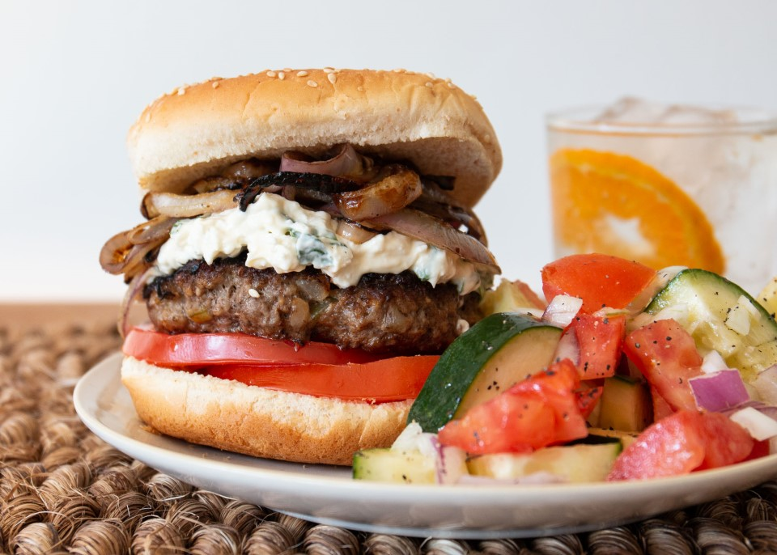

Goat Cheese stuffed Lamb Burger

Description
A delicious lamb burger stuffed with creamy goat cheese made with fresh Rosemary and spices for a real Greek flavor!
Ingredients
- 1 teaspoon olive oil
- 1/2 cup diced onion
- 2 pounds ground lamb
- 1 egg
- 1 cup bread crumbs
- 1 clove garlic, minced
- 4 1/2 teaspoons salt
- 1 tablespoon ground black pepper
- 4 ounces soft goat cheese
- 1 tablespoon extra-virgin olive oil
- 1 tablespoon chopped fresh basil leaves
- 1 tablespoon chopped fresh oregano
Steps
- Heat 1 teaspoon of olive oil in a small skillet over medium heat. Cook and stir the onions in the oil until soft and translucent, about 5 minutes.
- Gently knead together the softened onions, lamb, egg, bread crumbs, garlic, salt, and pepper. Divide the mixture into 6 parts and roll into balls, then cover and refrigerate until ready to use.
- Mix together the goat cheese, extra-virgin olive oil, basil, and oregano until well combined; cover and chill for 5 minutes.
- Preheat an outdoor grill for medium-high heat.
- Working with one portion of meat at a time, make an indentation in the center of the ball with your thumb. Fill the indentation with a heaping tablespoon of the goat cheese mixture.
Gently pull and form the meat patty around the cheese filling, making a burger-shaped patty. Repeat with each ball of the lamb mixture.
- Grill the patties on the preheated grill until no longer pink in the center and well done, about 8 minutes per side.
Back to menu